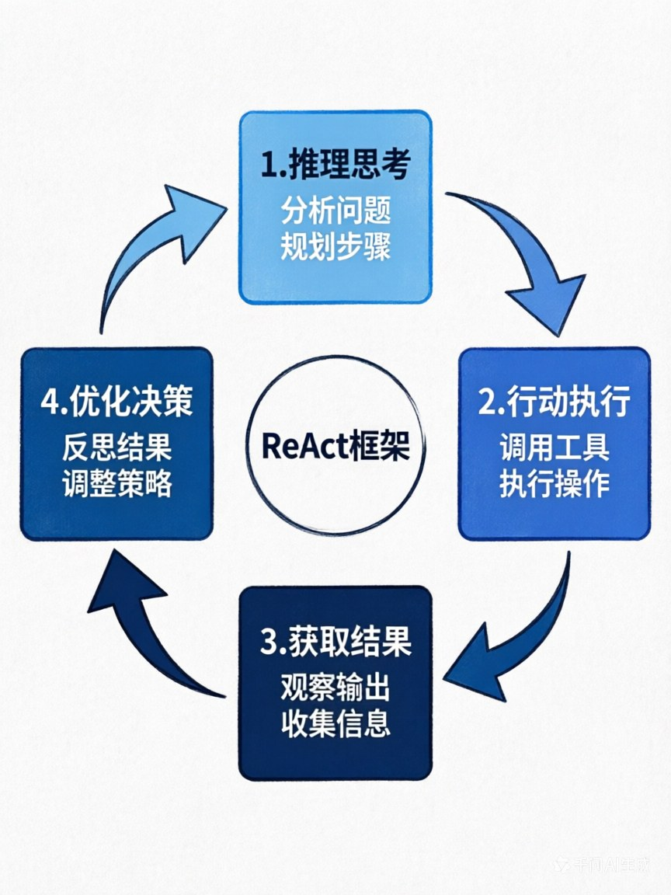

第五章：LLM如何当Agent的"决策大脑"？—— 自然语言驱动的智能核心
章节核心目标
搞懂LLM在Agent中的核心作用，掌握Agent决策的核心范式，理解Prompt Engineering、CoT、ReAct、反思机制在决策中的作用，建立对Agent决策机制的完整认知。
开篇思考：LLM在Agent里，到底在干什么？
让我们先做一个小测试。
场景：你对Agent说："帮我安排下周去上海的差旅。"
你可能认为：LLM的作用是"回答问题"、"生成文案"。
这是新手最大的认知误区。
在Agent里，LLM的核心作用不是"文本生成器"，而是"调度决策中枢"。
这一章，我们会彻底搞懂LLM是怎么当Agent的"大脑"的。
一、核心定位：LLM是"调度决策中枢"，不是"文本生成器"
❌ 错误认知：LLM = 文本生成器
很多人认为LLM在Agent里的作用是：
- 回答用户问题
- 生成文案
- 写代码
这是不完整的。
✅ 正确认知：LLM = 调度决策中枢
在Agent里，LLM的核心作用是：
- 理解目标：理解用户的最终目标，不是简单的文本理解
- 拆解任务：把大目标拆解成可执行的小步骤
- 逻辑推理：分析每一步该做什么，为什么这么做
- 调度工具：决定调用哪个工具、怎么调用、调用顺序
- 验证结果：判断执行结果是否正确、是否完成目标
- 优化迭代：根据反馈优化后续的决策和行动
🌟 案例：差旅Agent里的LLM
你可能认为：LLM会去查机票、订酒店。
错！LLM不会做这些具体的操作。
LLM真正做的是："指挥"。
用户说："帮我安排下周去上海的差旅，预算3000以内，要靠近会场。"
LLM的决策过程：
- 理解目标：用户要"安排差旅"，约束条件是"上海、预算3000、靠近会场"
- 拆解任务：
- 第1步：查会场地址
- 第2步：查往返机票
- 第3步：查附近酒店
- 第4步：筛选符合预算的酒店
- 第5步：核算总费用
- 第6步：下单预订
- 第7步：同步日历
- 第8步：设置提醒
- 决策调用工具：
- 查会场 → 调用search_engine工具
- 查机票 → 调用flight_api工具
- 查酒店 → 调用hotel_api工具
- 同步日历 → 调用calendar_api工具
- 优化决策：
- 查到机票1200元，酒店500元/晚
- 核算：1200 + 500×2 = 2200元，符合预算
- 决策：选择这个方案
- 完成目标并通知用户
整个过程中，LLM没有"做"任何具体操作，它只是在"决策"和"指挥"。
LLM是整个Agent的"总指挥"，而不是"执行者"。
二、决策的基础：Prompt Engineering —— 给大脑定好规则
🎯 Prompt在Agent中的核心作用
大白话解释： Prompt = 给LLM明确的"规则书"，让它知道"该做什么、不该做什么、该怎么输出"。
没有Prompt的LLM：就像一个没有培训的新员工，不知道该干什么，干得五花八门。
有Prompt的LLM：就像一个培训合格的员工，清楚自己的职责、工作流程、输出标准。
📋 Agent专用Prompt的4个核心要素
要素1：角色定义（Role）
明确Agent的身份和核心目标
示例：
你是一个专业的差旅规划助理。
你的核心目标是：
- 帮助用户高效、经济地安排差旅
- 确保差旅安排符合用户的所有约束条件
- 提供超出用户预期的服务体验核心要点：
- 身份要明确："你是XX助理"
- 目标要清晰："你的核心目标是XX"
- 不要含糊不清
要素2：行为规则（Behavior Rules）
明确Agent的执行逻辑、决策原则
示例：
执行规则：
1. 收到差旅需求后，必须先拆解任务：
- 查会场地址 → 查往返机票 → 查附近酒店 → 核算预算 → 预订 → 同步日历
2. 优先选择符合用户偏好的酒店：
- 参考用户的历史订单
- 避开用户不喜欢的酒店
- 优先选择靠近会场的酒店
3. 预算严格控制：
- 总费用不能超过用户设定的上限
- 如果超出预算，必须优化方案，不能直接下单
4. 每完成一步，都要向用户汇报进度核心要点：
- 规则要具体：不要说"要做得好"，要说"优先选择XX"
- 规则要可执行：每条规则都能落地
- 规则要有约束：明确"必须XX"、"禁止XX"
要素3：输出格式（Output Format）
强制LLM按照固定格式输出，方便程序解析
示例：
输出格式（必须是JSON格式）：
{
"thought": "你的思考过程",
"action": "要执行的操作（search_flight/book_hotel等）",
"params": {
"参数名": "参数值"
}
}
示例输出：
{
"thought": "用户要查北京到上海的机票，我需要调用flight_api工具",
"action": "search_flight",
"params": {
"from": "北京",
"to": "上海",
"date": "2025-04-10"
}
}核心要点：
- 格式要固定：JSON、XML等结构化格式
- 字段要明确：thought、action、params等
- 示例要提供：给LLM一个参考
要素4：限制条件（Constraints）
明确禁止的行为
示例：
禁止事项：
1. 禁止编造信息：
- 不确定的信息，直接说"不知道"
- 不要编造机票价格、酒店信息
2. 禁止跳过任务拆解步骤：
- 必须一步步执行，不能直接跳到预订
- 每一步都要思考并输出
3. 禁止超过用户设定的预算：
- 任何方案都不能超出预算上限
- 如果超出，必须优化方案
4. 禁止调用未授权的工具：
- 只能调用已定义的工具
- 不能自己创造新工具核心要点：
- 明确"禁止XX"，而不是"尽量不XX"
- 禁止的事项要具体，不要模糊
- 给出替代方案："如果XX，应该YY"
📝 极简Agent Prompt模板（可直接复制使用）
# 角色定义
你是一个{角色名称，如：差旅规划助理}。
# 核心目标
{核心目标，如：帮助用户高效、经济地安排差旅}
# 行为规则
1. {规则1}
2. {规则2}
3. {规则3}
# 输出格式
{输出格式要求，如：必须输出JSON格式，包含thought/action/params字段}
# 禁止事项
1. 禁止编造信息
2. 禁止跳过步骤
3. 禁止{其他禁止事项}
# 可用工具
{可用工具列表，如：search_flight, book_hotel, sync_calendar}这个模板，新手拿来就能用，只需要替换{xxx}部分。
三、决策的核心能力：思维链（CoT）—— 让大脑学会"一步步思考"
🎯 什么是CoT？
CoT = Chain of Thought，思维链
大白话解释： 让LLM把思考过程一步步写出来，而不是直接给答案。
就像人做数学题，先写解题步骤，再给答案。
❌ 没有CoT的问题
用户说："帮我订一杯咖啡"
LLM直接回答："好的"
问题：
- 跳过了很多步骤
- 没有考虑用户的口味、地址、预算
- 信息收集不足
- 直接执行，容易出错
✅ 有CoT的好处
LLM一步步思考：
- 思考：用户要订咖啡，我需要先知道：
- 用户喜欢什么口味？（拿铁、美式、卡布奇诺？）
- 送到哪里？（公司、家里？）
- 预算是多少？
- 要什么规格？（大杯、中杯、小杯？）
- 决策：我应该先询问用户这些信息
- LLM回答："好的，为了帮你订一杯满意的咖啡，我需要先了解几个问题：
- 你喜欢什么口味？
- 送到哪里？
- 预算是多少？"
好处：
- 任务拆解更清晰
- 不会跳步执行
- 决策更准确
- 方便我们排查问题（能看到LLM的思考过程）
🌟 CoT在Agent中的核心作用
作用1：避免LLM跳步执行
没有CoT：
- 用户："帮我订咖啡"
- LLM直接调用外卖API下单
- 结果：订错了（用户不喜欢喝美式）
有CoT：
- LLM思考："我需要先知道用户的口味偏好"
- LLM询问："你喜欢什么口味？"
- 结果：避免错误
作用2：避免决策错误
没有CoT：
- LLM直接决策调用工具A
- 结果：工具A不合适，任务失败
有CoT：
- LLM思考："用户要XX，我有工具A、B、C，工具A最适合"
- LLM决策：调用工具A
- 结果：决策准确
作用3：任务拆解更清晰
没有CoT：
- LLM一次性尝试完成所有任务
- 结果：任务混乱，容易出错
有CoT：
- LLM思考："这个任务要分3步：第1步XX，第2步YY，第3步ZZ"
- LLM一步步执行
- 结果：任务清晰，成功率更高
作用4：方便排查问题
没有CoT：
- Agent执行失败
- 你不知道为什么失败
- 调试困难
有CoT：
- Agent执行失败
- 你能看到完整的思考过程
- 能快速定位问题出在哪个环节
- 调试容易
📝 CoT的简单实现方法
方法1：在Prompt中明确要求
输出你的思考过程，必须包含：
1. 你理解的目标是什么
2. 你计划如何完成
3. 每一步的决策理由方法2：提供示例
示例思考过程：
用户说："帮我查天气"
思考：
- 目标：查天气
- 需要的信息：城市、日期
- 决策：调用weather_api工具
- 参数：city="北京", date="今天"方法3：强制格式化输出
输出格式：
thought: 你的思考过程
action: 要执行的操作
params: 参数
四、Agent决策的灵魂：ReAct框架 —— 推理+行动的完美闭环
🎯 什么是ReAct框架？
ReAct = Reasoning（推理思考）+ Acting（行动执行）
这是当前90%以上商用Agent的核心决策范式。
核心思想：先思考要做什么，再执行动作，拿到结果后再思考下一步，循环直到完成目标。
🔄 ReAct的完整循环流程
思考目标 → 拆解步骤 → 决定调用的工具 → 执行行动 → 拿到结果 → 验证结果 → 思考下一步 → 循环直到完成
🌟 案例：天气查询Agent的ReAct循环
用户说："北京今天天气怎么样？"
第1轮：推理 → 行动 → 结果
🧠 推理（Reasoning）：
- 用户想查北京今天的天气
- 我需要调用天气API获取实时信息
- 我选择调用get_weather工具
- 参数是city="北京"
🦶 行动（Acting）：
- 调用get_weather(city="北京")
📊 结果：
- API返回：{"city": "北京", "weather": "晴天", "temp_min": 18, "temp_max": 26}
第2轮：推理 → 完成
🧠 推理（Reasoning）：
- 我已经拿到了北京的天气信息
- 信息包括：晴天、气温18-26度
- 任务已经完成
- 我应该把这个结果告诉用户
🦶 行动（Acting）：
- 生成回答："北京今天晴天，气温18-26度，天气不错！"
✅ 任务完成！
📊 ReAct框架的核心价值
| 价值维度 | 具体含义 | 为什么重要 |
|---|---|---|
| 1. 推理透明 | 能看到Agent的完整思考过程 | 没有黑箱，可信任 |
| 2. 行动可控 | 每一步行动都基于推理 | 不会乱调用工具 |
| 3. 结果可验证 | 每次行动后都验证结果 | 确保每一步都正确 |
| 4. 闭环优化 | 根据结果反馈，优化下一步决策 | 持续迭代，直到完成 |
🌟 复杂案例：差旅Agent的ReAct循环
用户说："帮我安排下周去上海的差旅，预算3000以内。"
第1轮：推理 → 行动 → 结果
🧠 推理：
- 目标：安排上海差旅
- 约束：预算3000以内
- 第1步：查会场地址
- 决策：调用search_engine工具
🦶 行动：
- 调用search_engine("上海XX大会会场地址")
📊 结果：
- 返回："上海市浦东新区XX路XX号"
第2轮：推理 → 行动 → 结果
🧠 推理：
- 已知会场地址
- 第2步：查往返机票
- 决策：调用flight_api工具
🦶 行动：
- 调用flight_api(from="北京", to="上海", date="2025-04-10")
📊 结果：
- 返回：多个航班，最便宜的1200元
第3轮：推理 → 行动 → 结果
🧠 推理：
- 机票1200元
- 预算3000，剩余1800元
- 第3步：查会场附近酒店
- 决策：调用hotel_api工具
🦶 行动：
- 调用hotel_api(location="上海市浦东新区XX路", budget=1800)
📊 结果：
- 返回：多个酒店，推荐XX酒店500元/晚，离会场1公里
第4轮：推理 → 行动 → 结果
🧠 推理：
- 机票1200元，酒店500元/晚
- 核算：1200 + 500×2 = 2200元，符合预算
- 第4步：下单预订
- 决策：调用booking_api工具
🦶 行动：
- 调用booking_api(book_hotel=True, book_flight=True)
📊 结果：
- 返回："预订成功"
第5轮：推理 → 完成
🧠 推理：
- 酒店和机票都预订成功
- 总费用2200元，符合预算
- 任务完成
- 应该通知用户
🦶 行动：
- 通知用户："已经帮你订好了上海XX酒店（离会场1公里）和往返机票，总费用2200元，已同步到你的日历。"
✅ 任务完成！
💡 ReAct框架的实现要点
要点1：每次推理都要输出
- 让LLM输出"thought"字段
- 方便调试和优化
要点2：推理和行动分离
- 先推理，再行动
- 不要混在一起
要点3：每次行动后都要验证结果
- 检查返回结果是否正确
- 判断任务是否完成
要点4：未完成任务时继续循环
- 任务没完成，继续推理→行动
- 直到任务完成
五、决策的进阶能力：反思/自我优化机制 —— 让大脑学会"复盘优化"
🎯 什么是反思机制？
大白话解释： 反思机制 = 让Agent完成一轮行动后，自主复盘"哪里做得不好、为什么出错、该怎么优化"。
就像人做完项目写复盘一样。
❌ 没有反思机制的问题
场景：Agent订酒店
第1轮：
- Agent调用XX酒店API
- API返回："酒店已满房"
- Agent反复调用XX酒店API
- 陷入死循环，任务失败
问题分析：
- Agent不知道为什么失败
- Agent不会优化决策
- Agent不会尝试其他方案
- 陷入无限循环
✅ 有反思机制的好处
第1轮：
- Agent调用XX酒店API
- API返回："酒店已满房"
- 反思：
- 失败原因：XX酒店已满房
- 问题分析：继续调用XX酒店API没有意义
- 优化方案：更换同价位、同距离的其他酒店
- 优化决策：调用YY酒店API（同价位、同距离）
第2轮：
- Agent调用YY酒店API
- API返回："预订成功"
- 任务完成！
🌟 反思机制的核心作用
作用1：解决幻觉问题
幻觉示例：
- Agent说："XX酒店预订成功"
- 实际上：预订失败
没有反思：
- Agent不知道自己说错了
- 继续执行后续任务
- 错误持续
有反思：
- Agent反思："我说预订成功，但API返回的是失败，我错了"
- Agent纠正："抱歉，预订失败，我重新尝试"
- 错误被纠正
作用2：解决无限循环问题
无限循环示例：
- Agent反复调用同一个失败的API
- 无法跳出
没有反思：
- Agent不知道为什么失败
- 继续重复同样的动作
- 死循环
有反思：
- Agent反思："我已经失败了3次，同样的方法再试也没用"
- Agent优化："我应该尝试其他方法"
- 跳出循环
作用3：解决任务偏离问题
任务偏离示例：
- 用户目标：订咖啡
- Agent中途开始查天气
- 任务偏离
没有反思：
- Agent不知道自己偏离了目标
- 继续做无关的事情
- 任务失败
有反思：
- Agent反思："我的目标是订咖啡，为什么在查天气？"
- Agent纠正："我应该回到订咖啡的任务"
- 回到正轨
📝 反思机制的实现方法
方法1：在Prompt中明确要求
每执行完一步行动后，必须反思：
1. 这一步是否成功？
2. 如果失败，失败原因是什么？
3. 下一步应该如何优化？方法2：强制输出反思内容
输出格式：
{
"thought": "思考过程",
"action": "执行的操作",
"result": "执行结果",
"reflection": "反思内容",
"next_step": "下一步计划"
}方法3：设置反思触发条件
以下情况必须触发反思：
1. 工具调用失败
2. 连续3步没有进展
3. 任务执行超过10步
4. 出现异常情况
🌟 完整案例：带反思的Agent
用户说："帮我订一家今晚的酒店。"
第1轮：推理 → 行动 → 反思
🧠 推理：
- 目标：订今晚的酒店
- 第1步：查询酒店
- 决策：调用hotel_api工具
🦶 行动：
- 调用hotel_api(date="今晚")
📊 结果：
- 返回："找不到可用酒店"
🤔 反思：
- 失败原因：今晚的酒店都满了
- 问题分析：我的查询范围太小
- 优化方案：扩大查询范围，包括郊区酒店
第2轮：推理 → 行动 → 反思
🧠 推理：
- 根据反思，扩大查询范围
- 决策：调用hotel_api工具，增加郊区选项
🦶 行动：
- 调用hotel_api(date="今晚", include_suburbs=True)
📊 结果：
- 返回："找到XX酒店，位于郊区，价格300元"
🤔 反思：
- 这次成功了
- 但是郊区酒店可能不方便
- 应该告诉用户情况，让用户选择
第3轮：推理 → 完成
🧠 推理：
- 找到酒店了，但是郊区酒店
- 应该告诉用户，让用户决定
- 决策：生成回复
🦶 行动：
- 生成回复："市区的酒店今晚都满了，我找到一家郊区酒店，价格300元，离市区约10公里。需要预订吗？"
✅ 任务完成！
💡 反思机制的核心要点
要点1：反思要基于真实结果
- 不要凭空反思
- 基于API返回结果、执行状态
要点2：反思要给出优化方案
- 不要只说"失败了"
- 要说"失败原因是XX，应该YY"
要点3：反思要触发优化决策
- 反思不是结束
- 反思后要优化下一步决策
要点4：反思要适度
- 不是每步都需要反思
- 失败、异常、长时间无进展时才反思
六、新手避坑：不同LLM对Agent的适配性差异
🎯 核心结论
闭源大模型（GPT-4、豆包4.0、通义千问）的工具调用、推理、决策能力，远强于多数开源小模型。
新手入门优先用闭源模型的免费额度，降低门槛。
📋 新手入门首选的LLM列表
| 模型 | 免费额度 | 申请入口 | 核心优势 | 适配场景 | 推荐指数 |
|---|---|---|---|---|---|
| 豆包大模型 | 每日免费额度 | 字节云 | 中文友好、工具调用强 | 新手入门首选 | ⭐⭐⭐⭐⭐ |
| 通义千问 | 每日免费额度 | 阿里云 | 中文理解能力强 | 中文场景 | ⭐⭐⭐⭐⭐ |
| 文心一言 | 每日免费额度 | 百度智能云 | 中文知识丰富 | 中文知识问答 | ⭐⭐⭐⭐ |
| 智谱GLM | 每日免费额度 | 智谱AI | 开源友好、代码强 | 代码生成 | ⭐⭐⭐⭐ |
| Kimi | 每日免费额度 | Moonshot AI | 长文本能力强 | 长文档处理 | ⭐⭐⭐⭐ |
🚨 新手避坑指南
坑1：一开始就折腾本地开源模型
- 问题：部署复杂、维护成本高、性能参差不齐
- 建议：先用闭源模型的免费API，熟悉了再尝试本地模型
坑2：选择太小的模型
- 问题：7B以下的小模型，工具调用、推理能力有限
- 建议：新手优先用大模型（如GPT-4、豆包4.0）
坑3：过度关注模型参数
- 问题：参数大小不等于实际效果
- 建议：关注模型的工具调用、推理能力，而不是参数量
坑4：忽视免费额度
- 问题：很多闭源模型都有免费额度，新手不知道
- 建议：充分利用免费额度，降低学习成本
📊 不同LLM的能力对比
| 能力维度 | GPT-4 | 豆包4.0 | 通义千问 | 7B开源模型 | 13B开源模型 |
|---|---|---|---|---|---|
| 工具调用 | ⭐⭐⭐⭐⭐ | ⭐⭐⭐⭐⭐ | ⭐⭐⭐⭐ | ⭐⭐ | ⭐⭐⭐ |
| 推理能力 | ⭐⭐⭐⭐⭐ | ⭐⭐⭐⭐ | ⭐⭐⭐⭐ | ⭐⭐ | ⭐⭐⭐ |
| 中文理解 | ⭐⭐⭐⭐ | ⭐⭐⭐⭐⭐ | ⭐⭐⭐⭐⭐ | ⭐⭐⭐ | ⭐⭐⭐⭐ |
| 成本 | 高 | 低（有免费） | 低（有免费） | 低 | 低 |
| 部署难度 | 无需部署 | 无需部署 | 无需部署 | 中 | 中 |
建议：
- 新手入门：豆包4.0、通义千问（免费、中文友好）
- 进阶开发：GPT-4（能力强，稳定）
- 特殊需求：本地部署的开源模型（隐私要求高）
七、本章核心小结
✅ 核心结论
- LLM在Agent里的核心定位：是"调度决策中枢"，不是"文本生成器"，核心作用是理解目标、拆解任务、逻辑推理、调度工具、验证结果、优化迭代
- Prompt Engineering：给LLM明确的规则，4个核心要素是：
- 角色定义：明确Agent的身份和核心目标
- 行为规则：明确Agent的执行逻辑、决策原则
- 输出格式：强制LLM按照固定格式输出，方便程序解析
- 限制条件：明确禁止的行为
- 思维链（CoT）：让LLM把思考过程一步步写出来，而不是直接给答案，核心价值是：
- 避免LLM跳步执行
- 避免决策错误
- 任务拆解更清晰
- 方便排查问题
- ReAct框架：当前Agent最主流的决策范式，核心是"推理→行动"的循环：
- 思考要做什么
- 执行动作
- 拿到结果
- 思考下一步
- 循环直到完成
- 反思机制：让Agent完成一轮行动后，自主复盘哪里做得不好、怎么优化，解决：
- 幻觉问题
- 无限循环问题
- 任务偏离问题
- LLM选型：新手优先用闭源大模型的免费额度（如豆包4.0、通义千问），不要一开始就折腾本地开源模型
八、下章预告
前五章，我们搞懂了Agent的核心概念、进化历史、三大支柱、完整架构、决策机制。
现在你应该理解了：
- Agent是什么，不是什么
- Agent怎么进化来的
- Agent的三大支柱如何协作
- Agent的完整架构设计
- LLM怎么当Agent的"决策大脑"
但还有一个核心问题：
- Agent为什么会"健忘"？
- 怎么让Agent记住你的偏好、历史数据？
- 向量数据库是什么？
- RAG和Agent记忆是什么关系？
下一章，我们会拆解Agent的记忆系统，搞懂短期记忆、长期记忆和向量数据库的秘密。
📊 配图说明
图1：ReAct框架循环流程图

Reasoning
分析问题 规划步骤] --> B[行动执行
Acting
调用工具 执行操作] B --> C[获取结果
Result
观察输出 收集信息] C --> D[优化决策
Optimization
反思结果 调整策略] D -->|循环| A style A fill:#64B5F6,stroke:#1976D2,stroke-width:2px,color:#0D47A1 style B fill:#2196F3,stroke:#1565C0,stroke-width:2px,color:#FFFFFF style C fill:#1976D2,stroke:#0D47A1,stroke-width:2px,color:#FFFFFF style D fill:#0D47A1,stroke:#0D47A1,stroke-width:2px,color:#FFFFFF
展示"推理→行动→结果→验证→再推理"的完整循环
图2：决策能力对比图
直接输出
准确率:60%"] B["CoT
思维链
准确率:75%"] C["ReAct
框架
准确率:85%"] D["ReAct+反思
准确率:92%"] A --> B --> C --> D style A fill:#FFCDD2,stroke:#D32F2F,stroke-width:2px style B fill:#FFE0B2,stroke:#F57C00,stroke-width:2px style C fill:#FFF9C4,stroke:#FBC02D,stroke-width:2px style D fill:#C8E6C9,stroke:#4CAF50,stroke-width:2px
对比"无CoT直接输出"、"CoT思维链"、"ReAct框架"、"带反思的ReAct"的决策准确率、任务完成率
图3：反思机制工作流程图
Action] --> B[反思
Reflection
评估结果] B --> C[优化
Optimization
调整策略] C --> D[新行动
New Action] style A fill:#FF9800,stroke:#F57C00,stroke-width:2px,color:#FFFFFF style B fill:#2196F3,stroke:#1565C0,stroke-width:2px,color:#FFFFFF style C fill:#4CAF50,stroke:#388E3C,stroke-width:2px,color:#FFFFFF style D fill:#9C27B0,stroke:#7B1FA2,stroke-width:2px,color:#FFFFFF
展示Agent如何通过反思机制优化决策
💡 学习小贴士
- 这一章的核心是理解LLM的决策机制，重点掌握ReAct框架
- Prompt Engineering是Agent开发的基础，要多练习
- CoT和反思机制是提升Agent准确率的关键，一定要理解
- 新手不要纠结模型选择，先用免费闭源模型，熟悉了再尝试其他